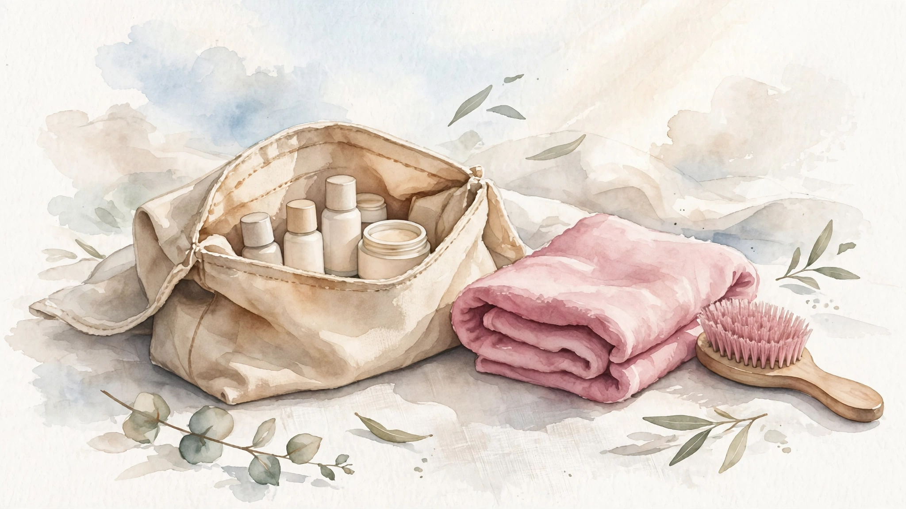
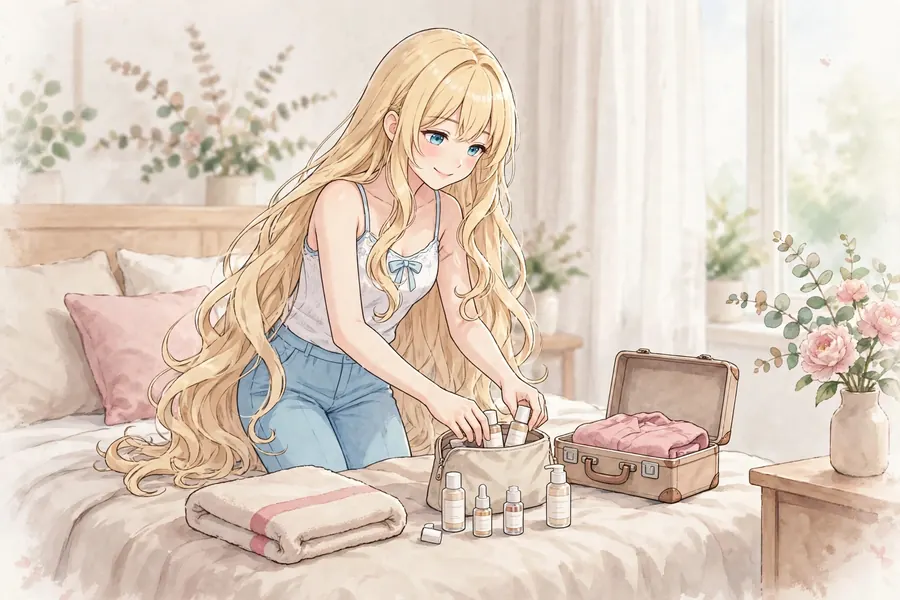

トップ ＞ スキンケア ＞ 旅行・外出時のスキンケアの量と持ち運び
旅行・外出時のスキンケアの量と持ち運び

旅行の荷造りで迷うのが、スキンケアをどれだけ持っていくかです。多すぎれば荷物になり、少なければ現地で困ります。施術の現場でも、出張や旅行の多いお客様から相談を受けます。この記事では、量の決め方と持ち運びの工夫を整理します。
量は「泊数×1日の回数」で逆算する
必要量は、普段の1回量が分かっていれば計算できます。たとえば美容液を朝晩に使うなら、2泊3日では最大6回分です。そこに「念のため1回分」を足すくらいが、私の目安です。普段の1回量の目安の作り方は、別記事「美容液の使用量、どう決める？」でも紹介しています。
アイテムごとに回数を書き出してみると、意外と少ない量で足りることに気づきます。大きなボトルをそのまま持っていく前に、まず計算してみることをおすすめします。
小分け容器と個包装の使い分け
持ち運びの方法は、大きく2つあります。ひとつは小分け容器（トラベルボトル）に移し替える方法。普段のアイテムをそのまま使えるのが利点ですが、移し替えるときは容器を清潔にして、詰めた日付を書いておくと管理しやすくなります。もうひとつは、1回分ずつの個包装タイプや、ミニサイズのセットを使う方法です。開封したての状態で持っていける手軽さがあります。
日帰りの外出では、個包装のシートタイプやミニサイズが身軽です。泊数が増えるほど、小分け容器の方が量の調整がしやすくなります。
移動中の保管の注意
飛行機を利用する場合、機内持ち込みの液体物には容量の制限があります（国際線では1容器100mL以下、決められた袋に入れる、といった一般的なルールがあります）。最新の条件は航空会社や空港の案内で確認してください。預け荷物に入れる場合も、液漏れに備えてキャップをテープで留める、袋を二重にする、といった小さな工夫が役立ちます。
また、車内や窓際など、高温になる場所に長時間置かないことも、保管の基本です。自宅での保管と同じく、「温度と光」を意識するのがポイントです。
現地で買い足す前提にする、という考え方もあります。日常的に使う基本のものだけを持ち、足りなくなったら現地のドラッグストアで小さいサイズを買う。荷物を減らしたい旅行では有効な方法です。ただし、肌に合うかどうか分からないものを旅先で初めて使うのは避けたいところです。初めてのアイテムは、自宅で試してから旅に持っていく。この順番を守るだけで、旅先での困りごとはかなり減ります。
帰宅したら、小分け容器に残った分は早めに使い切るか、記録を見て次回の量の参考にしてください。旅ごとの記録が残ると、荷造りは回を追うごとに楽になります。

セラフィナ「旅行の量は、泊数から逆算すると、多すぎず足りなくならずに済むね」